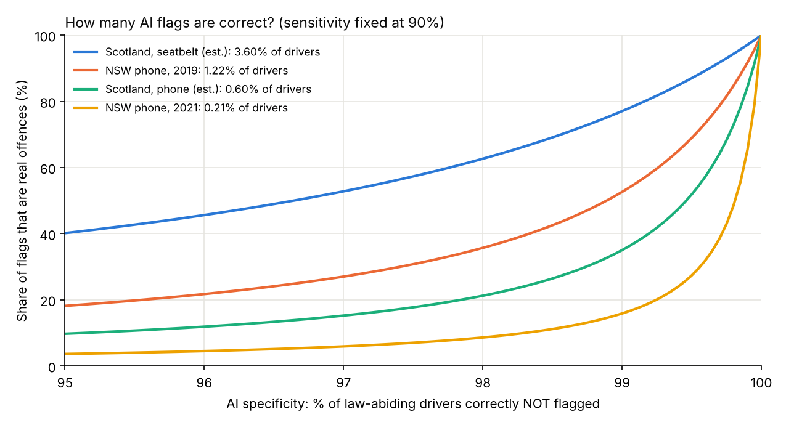
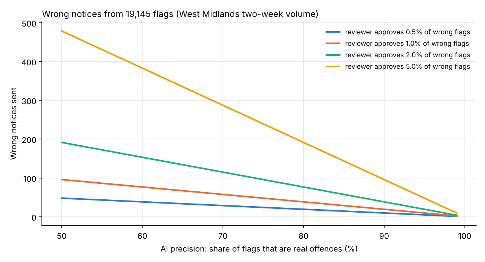

Analysis · AI in public services · UK
AI road cameras: how many flags are wrong?
When fewer drivers offend, a larger share of AI flags is wrong
By Muzammal Hussain · 18 October 2026 · 6 min read
AI cameras that spot drivers holding a phone or not wearing a seatbelt are spreading across the UK. Sussex Police switched them on in April 2026, and Scotland, where I live, has started its own pilot. Trial results are reported as thousands of "offences". But an AI flag is only a candidate offence. I wanted to know how many of those flags could be wrong, and what that means for the people who review them.
Key findings
- A two-week West Midlands trial produced 19,145 flags at two sites, about 684 per site per day. 90% were seatbelt flags.
- 8,024 of those images were checked by people, but the accuracy result has not been published.
- Using Scotland's own estimates (3.6% of drivers without a seatbelt, 0.6% using a handheld phone), even a camera that is right about 99.5% of law-abiding drivers would produce roughly one wrong flag for every real one for phone use.
- The deterrence paradox: as cameras reduce offending, the share of wrong flags rises. Human review becomes more important over time, not less.
What the trials report
- West Midlands, two weeks in March: 17,225 seatbelt and 1,920 phone flags from initial AI scans at Ladywood and Fallings Park. The cameras were not used for enforcement.
- Sussex: cameras live since 13 April 2026; officers verify each flagged image before any action.
- Scotland: a pilot of the same system, with two cameras rotating across 12 locations and a two-stage human review.
- Athens (leaked figures, a warning sign rather than a UK measure): of about 5,500 reviewed AI citations, only 400 were judged valid. Reported errors included empty seats flagged for no seatbelt and dark shirts mistaken for a missing belt.
For context, a handheld phone offence in the UK carries six penalty points and a £200 fixed penalty, and a missing seatbelt can bring a fine of up to £500. A wrong notice is not a small thing.
Why a very accurate camera can still be wrong a lot
This is the base-rate problem, familiar from medical screening. If very few people have a condition, even a good test produces many false alarms, because the small error rate applies to the huge number of healthy people.
Road cameras work the same way. Most drivers are wearing a seatbelt and not holding a phone. If the camera wrongly flags just 1 in 200 law-abiding drivers, that error is applied to millions of journeys.
I modelled this with one formula. Two inputs come from public estimates: the share of drivers offending (Scotland's government figures, and phone-use rates from New South Wales before and after cameras). Two are assumptions, because no UK trial has published them: the camera catches 90% of real offences, and its specificity (how often it correctly leaves law-abiding drivers alone) varies from 95% to 100%.

| Offence rate | 99% | 99.5% | 99.9% |
|---|---|---|---|
| Scotland, seatbelt (3.6%) | 77% | 87% | 97% |
| NSW phone, 2019 (1.2%) | 53% | 69% | 92% |
| Scotland, phone (0.6%) | 35% | 52% | 84% |
| NSW phone, 2021 (0.2%) | 16% | 27% | 65% |
Column headings are camera specificity; values are the share of flags that are real offences.
The deterrence paradox
In New South Wales, the share of drivers detected using a phone fell from 1 in 82 in 2019 to 1 in 478 in 2021 after cameras were introduced. That is the cameras doing their job. But with the same camera at 99.5% specificity, the share of real offences among flags falls from 69% to 27%. When most drivers behave, most of what is left to flag is error.
So the more successful a camera programme is, the more it depends on careful human review. A system designed to save reviewers' time on day one can quietly become a system that mostly flags innocent drivers by year three.
Why human review matters
Review is the last filter. If reviewers approve even a small share of wrong flags, those become wrong notices. For the West Midlands volume of 19,145 flags, a camera with 80% precision and reviewers who approve 1% of wrong flags would still send about 38 wrong notices in two weeks; at 2% it would be about 77.

Review also takes time: about 80 hours for those 19,145 images at 15 seconds each, or 160 hours at 30 seconds. Under that kind of workload, careful checking is hard to keep up.
What I would ask for
- Publish the accuracy. The West Midlands checked 8,024 images. Releasing the result, separately for phone and seatbelt flags, would let the public see how often innocent drivers are flagged. Trust needs that number.
- Test thoroughly before scaling, and aim very high. For Scotland's pilot, specificity close to 99.9% should be the goal so that false flags do not overload reviewers and the courts. Even then, at Scotland's estimated phone-use rate about one phone flag in six would still be wrong.
- Track accuracy over time, because the deterrence paradox means the same camera gets less precise as driving improves.
Why 90% of flags are seatbelt flags
Not wearing a seatbelt is more common than holding a phone (about 3.6% against 0.6% in Scotland's estimates), and it may be easier for a camera to flag. Some of the gap could also be false flags, like the dark-clothing errors reported in Athens. The published figures cannot separate the two; only the accuracy check can.
Limitations
The camera's sensitivity and specificity and the reviewers' error rate are assumptions, so the results are ranges, not the accuracy of any real system. The offence rates are estimates, and the New South Wales figures are detection rates that only approximate true offending. The Athens figures are leaked and mix offence types. Traffic volumes for the West Midlands sites were not published.
Why this matters beyond roads
The same arithmetic applies to any AI that screens a large population for rare events: fraud alerts, medical red-flag detection, content moderation. In my own work on clinical documentation, a red-flag detector that is right 99% of the time can still bury clinicians in false alarms if the condition is rare. Building the human review step in from the start is not optional.
Sources: West Midlands trial (Highways Industry, RAC, October 2026); Sussex Police deployment (Resultsense, April 2026); Scotland pilot (Fleet World; Kurrant, February 2026); Athens figures (CarScoops, June 2026); UK penalties (GOV.UK). All figures and links are listed in the GitHub repository.